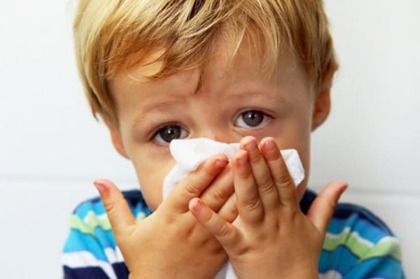
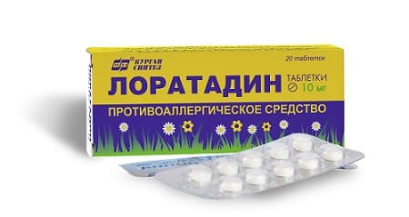
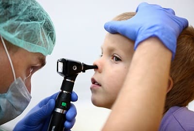
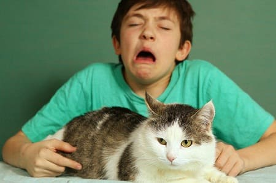
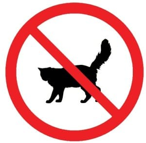

Аллергии — обычное дело у детей. Так как аллергический ринит (его еще называют сенной лихорадкой) — самая распространенная аллергическая реакция, мы сосредоточимся на его диагностике, лечении и профилактике. Эта информация будет полезна и при других аллергических состояниях, таких как астма или экзема. Пищевые аллергии также вносят свой вклад в развитие ринита.
СИМПТОМЫ
Вот основные признаки, наблюдающиеся при аллергическом рините:
• заложенность носа;
• прозрачное слизистое отделяемое из носа;
• зуд в носу;
• кожа кончика и крыльев носа красная и травмирована из-за постоянного вытирания слизи;
• частое чихание;
• глаза покрасневшие, чешутся, слезятся;
• хронический кашель;
• дыхание через нос шумное, с хрипами и бульканьем слизи в носу;
• храп.
Все эти симптомы могут быть и при ОРЗ. Как же родителям определить, ОРЗ у ребенка или аллергия? Лучше всего — по длительности и повторяемости симптомов. Насморк при ОРЗ проходит за одну-три недели. Воспаление носовых пазух (гайморит) протекает дольше, но при них будет зеленое отделяемое из носа, лихорадка, головная боль — явные признаки инфекции. Аллергические заболевания протекают несколько иначе. Симптомы продолжаются больше 3 недель. Если болезнь продолжается больше 3 недель, при этом нет ухудшения сопровождающего воспаление носовых пазух, или стихания, то, скорее всего, это аллергия.
Рецидивированние симптомов. Аллергия может продолжаться день-два либо неделю и больше, а затем исчезнуть и появиться снова через неделю другую.
Внезапное исчезновение симптомов. При простуде насморк уменьшается постепенно в течение нескольких дней. Аллергический насморк, наоборот, может «расцвести» за один день, чтобы полностью исчезнуть на следующий.
Сезонность проявлений. Некоторые аллергии повторяются в определенный сезон, обычно весной или осенью. Потребуется год-два, чтобы заметить это.
СОВЕТ ДОКТОРОВ СИРС: БЫСТРАЯ ДИАГНОСТИКА АЛЛЕРГИИ Простой способ определить, с чем связаны симптомы у вашего ребенка, — дать ему антигистаминный препарат. Если состояние ребенка улучшится в течение нескольких часов, можете быть уверены, что это аллергия. Но такой способ не поможет выявить причину аллергии — это потребует гораздо больших усилий. |
Повторяющиеся инфекции. У детей, часто болеющих ОРЗ с кашлем синуситами, отитами, основным спусковым механизмом развития инфекций может быть аллергический ринит. Постоянное скоплени слизи носу — прекрасное место для размножения бактерий и вирусов.
Вот четыре распространенные ситуации, которые могут быть похожими на аллергию, но не являются ею:
• у ребенка были лихорадка, насморк и кашель в течение недели-двух, а затем несколько недель сохраняется остаточный насморк. Остаточные проявления ОРЗ иногда могут наблюдаться около 6 недель;
• темные круги под глазами без симптомов ринита — скорее всего, не аллергия. У некоторых детей просто такой цвет кожи;
• хронические или рецидивирующие насморк и кашель зимой — обычно просто повторяющиеся инфекции, так как зима — время ОРЗ;
• повторяющиеся отиты без признаков хронического ринита, вероятнее всего, не связаны с аллергией

ПРИЧИНЫ
Чужеродное вещество, которое называют аллергеном, попадает в организм через роговицу глаза, нос, легкие, желудок или кожу. Если у вас есть аллергия на это вещество, то близлежащие клетки вашей иммунной системы реагируют, выделяя химическое вещество, которое называют гистамином. Гистамин повреждает окружающие ткани. Этот механизм призван удалить или нейтрализовать антиген, но, к сожалению, он также вызывает у нас симптомы аллергии.
Наследственность также играет очень большую роль. Если один из родителей страдает аллергическим ринитом или экземой, вероятность того, что у ребенка также будет аллергия — 25%. Если аллергией страдают оба родителя, то вероятность развития аллергии у ребенка — 75%.
Лечение безрецептурными препаратами. Вот несколько вариантов лечения, которые облегчат состояние вашего ребенка до консультации врача.
«Нос-насос». Вы можете ограничить контакт с аллергеном и уменьшить заложенность носа, просто промывая его 2 раза в день солевым раствором с последующим высмаркиванием. Попросите врача показать вам, как выполняется данная процедура. Назальные солевые спреи для малышей и капли для детей постарше взрослых продаются без рецепта в любой аптеке. Промывание носа перед введением лекарственного препарата улучшает эффект лечения.
Пероральные антигистаминные короткого действия. Это наиболее эффективные безрецептурные медикаменты для уменьшения симптомов, но они вызывают сонливость. Обычно используют димедрол, супрастин или фенистил. Они действуют около 6 часов, но некоторые препараты на их основе работают до 12 часов.
Не вызывающие сонливости оральные антигистаминные длительного действия. Лоратадин и цетиризин — препараты, довольно эффективно действующие на протяжении 12—24 часов после приема. Они выпускаются в виде таблеток, сиропов и пастилок

Правильная дозировка для детей. Следуйте указаниям на упаковке. Обычно указаны дозы для детей от 4 лет и старше. Если дозировка для возраста вашего ребенка не указана, проконсультируйтесь у врача. |
МЕДИКАМЕНТЫ, ОТПУСКАЕМЫЕ ПО РЕЦЕПТУ ВРАЧА
Если лечение безрецептурными препаратами не помогает, необходим визит к врачу. Вот какие препараты есть в его распоряжении.
Длительно действующие оральные антигистаминные, не вызывающие сонливости. Чаще всего назначают следующие препараты: лоратадин (кларитин), кларотадин, цетиризин (зиртек), телфаст, эбастин (кестин), дезлоратадин (эриус), прималан. Их эффективность различается у разных людей: возможно, у кого-то один препарат будет работать хуже, а у кого-то — лучше. Не все из них можно назначать детям младше 12 лет. Проблема с подбором препарата, эффективного именно у вашего ребенка, состоит в том, что страховая компания оплатит только одно наименование лекарства. Вы можете сэкономить время, подобрав с врачом препарат, который лучше всего подходит именно в вашем случае.
Антигистаминные для наружного применения: азеластин (назальный спрей и глазные капли), виброцил. Серьезная альтернатива кортикостероидам, они могут неплохо работать у некоторых детей (добавление научного рецензента).
Назальные спреи, содержащие кортикостероиды. Это чрезвычайно эффективный способ устранения симптомов аллергии и безопасный в отличие от стероидов, которые принимают культуристы. Они действуют непосредственно в полостях носа, практически не всасываясь. Действовать они начинают не сразу, так что не предназначены для разового использования от случая к случаю. Эффект лучше при курсовом применении. Чаще других детям назначают назонекс, который используется один раз в сутки.
Сочетания рецептурных препаратов. В тяжелых случаях возможно сочетанное назначение оральных антигистаминов и назальных спреев с кортикостероидами.
Как выбрать препарат? Вот несколько рекомендаций, как выбрать лекарственный препарат.
Нерегулярные проявления. Если у вашего ребенка иногда бывают проявления аллергии (день есть — день нет), лучшим выбором будет безрецептурный оральный антигистаминный препарат длительного действия, не вызывающий сонливости (например, лоратадин). Если он недостаточно эффективен, попросите врача выписать другой для использования при необходимости.
Нерегулярные ночные проявления. Если нерегулярные проявления аллергии в основном беспокоит вашего ребенка ночью, вначале попробуйте безрецептурные антигистаминные короткого действия, так как они более эффективны, а снотворный эффект к утру пройдет. Во вторую очередь можно выбрать безрецептурные антигистаминные длительного действия, в третью — рецептурные препараты.
Симптомы на протяжении всего сезона. Если вы знаете, что аллергия будет продолжаться всю весну или осень, сначала попробуйте безрецептурный длительно действующий и не вызывающий сонливости оральный антигистаминный препарат. Если его будет недостаточно, испытайте эффективность рецептурного орального антигистаминного средства или назального спрея и используйте тот, который будет работать лучше. Если эффект не отличается, применяйте оба в течение недели. Когда сезон аллергии закончится, прекратите прием препаратов.
Внезапно резвившиеся сильная заложенность носа и головная боль. Если, получая антиаллергическую терапию, ваш ребенок жалуется на головную боль и заложенность носа, до прекращения жалоб целесообразно принимать безрецептурный препарат, снимающий отек слизистой носа, например назол беби или назол кидс. Чтобы не развилось воспаление носовых пазух, начните промывать и прочищать рос. Сохранить нормальный отток слизи из пазух и улучшить носовое дыхание поможет синупрет — эффектная натуральная добавка из пяти трав, разрешенная детям.
Круглогодичные проявления аллергии. Если ваш ребенок нуждается противоаллергическом лечении постоянно, лучшим выбором будет наивный спрей, содержащий антигистаминный препарат. На втором месте назальный спрей с кортикостероидом. При обострениях можно добавить рецептурное оральное антигистаминное средство. Конечно, при это вы захотите найти и устранить причину аллергии. Об этом читайте дальше.

ПОИСК ПРИЧИНЫ АЛЛЕРГИИ
Хотя многие родители, естественно, хотят прежде всего найти, что вызывает аллергию, позвольте дать вам небольшой совет. Этот процесс очень длительный и кропотливый. Прежде чем вы ввяжетесь в это, лучше подождать несколько недель — может, аллергия за это время прекратится. Если же проявления продолжаются или уходят и возвращаются, осложняя жизнь вашего ребенка, то тогда стоит начать расследование. Определите, когда и где случаются приступы аллергии. Эта информация поможет вам выявить наиболее вероятные причины.
Ночью и сразу после пробуждения. Если ваш ребенок прекрасно себя чувствует в течение дня, а ночью у него начинается насморк либо он просыпается с признаками ринита утром — можно заподозрить, что у него аллергия на что-то в спальне. Наиболее распространенные аллергены в спальне — пыль, плесень, постельные принадлежности. См. ниже о профилактике аллергических реакций в спальне.
Сезонные аллергии. Если ваш ребенок хорошо себя чувствует весь год, но в определенный сезон (обычно весной или в конце лета — начале осени) у него резко появляются симптомы аллергии либо они бывают только в ветреные дни, вероятно, у него аллергия на пыльцу или растения, которые доминируют в это время года. Они могут вызывать аллергию и днем, и ночью. См. ниже о профилактике сезонных аллергий.
Школьные аллергии. Если ваш ребенок отмечает симптомы аллергии только в школе или детском саду, но хорошо чувствует себя дома, ночью и в выходные, то аллергеном, вероятно, является что-то в школе или в детском саду.
В гостях у друзей или родственников. Если вы замечаете симптомы аллергии только в гостях в определенном доме, а в школе и дома все в порядке — то у ребенка может быть аллергия на что-то, свойственное именно этому дому (курительные смеси, домашние животные, растения, газонная трава). Простейший выход — не ходить туда или давать антигистаминный препарат перед визитом.
Круглогодичная аллергия. Если аллергия у вашего ребенка постоянна, то причиной может быть, как любая из вышеупомянутых, так и, например, пищевая аллергия. Табачный дым, вдыхаемый ребенком, также вызовет постоянные симптомы аллергии.
Если эти признаки позволили вам сузить выбор аллергена до одного- двух, то дальше вам будет легче. Следующий раздел расскажет, куда направить ваши усилия по профилактике аллергии.
Однако если вы не знаете, с чего начать, или у вашего ребенка круглогодичная аллергия, возможно, стоит сразу перейти к анализам на аллергены. Обнаружение аллергена с помощью анализов позволит вам сосредоточить усилия там, где они будут более действенны.

ПРОФИЛАКТИКА ПРИ ИЗВЕСТНОМ АЛЛЕРГЕНЕ
Пищевые аллергии. Не стоит недооценивать их в качестве возможной причины. Наиболее известные продукты, вызывающие аллергический ринит, — коровье молоко, пшеница и соевые продукты.
Сезонные аллергии и пыльца. Пыльца — крошечные, похожие на пыль желтые зернышки, которые можно увидеть в серединках цветов. Ветер разносит пыльцу, и она летает в воздухе, прилипая ко всему, чего коснется, волосам, одежде, попадая в нос и легкие вашего ребенка. Если вы подозреваете, что у вашего ребенка сезонная аллергия на пыльцу, то вот что вы можете сделать, чтобы минимизировать контакт с ней:
• оставайтесь в закрытом помещении в ветреные дни в сезон цветения и когда в воздухе много пыльцы;
• не разрешайте ребенку играть в полях, где много цветов и высокая трава;
• держите закрытыми все окна и двери в то время года, когда у вашего ребенка обостряется аллергический ринит;
• чаще стирайте верхнюю одежду и головные уборы в период цветения;
• купайте ребенка и мойте ему голову перед сном, чтобы удалить пыльцу;
• не сушите вещи вашего ребенка на улице, так как на них может налипнуть пыльца;
• установите в систему кондиционирования специальный фильтр, который очищает воздух, входящий снаружи. Его можно купить в хозяйственном магазине;
• приобретите переносной фильтр НЕРА, который удаляет пыльцу, частички почвы, споры, испражнения пылевых клещей, перхоть животных и многие другие аллергены. Он стоит $100—200, и, как правило, его мощности хватает для очистки одной комнаты. Или попробуйте ионный фильтр. Он стоит около $400—600, но очищает воздух во всем доме;
• больше всего пыльцы в воздухе обычно поздним утром и в начале дня. поэтому ограничьте игры на улице сезон аллергии: гулять можно ранним утром, в конце дня и вечером;
• настройте оконные кондиционеры рециркуляцию, чтобы исключить попадание в помещения воздуха, снаружи;
• подрезайте деревья и кустарники, растущие возле дома, чтобы избежать избыточного разрастания;
• не разрешайте своему ребенку играть возле свежескошенной травы.
Пылевые клещи. Пыль сама по себе не вызывает аллергию. Это делают пылевые клещи микроскопические организмы, живущие в пыли, точнее, частицы их испражнений. Пылевые клещи процветают в теплой, влажной среде. Вот некоторые меры, которые вы можете предпринять, чтобы удалить источники пыли из вашего дома и ограничить попадание аллергенов пылевых клещей в воздух:
• уберите все нижеперечисленные предметы из спальни — они собирают огромное количество пыли: чучела животных, книги с открытых книжных полок, груды одежды, стеганые одеяла, перьевые подушки, обитая тканью мебель, штабеля коробок, вещи, хранящиеся под кроватью, шерстяные одеяла, драпировки и горизонтальные жалюзи, электрические вентиляторы, крупные комнатные растения;
• возьмите за правило проводить следующие меры в отношении вещей, находящихся в спальне:
• при тяжелой аллергии могут понадобиться более дорогие и менее удобные меры:
Плесень. Это — следующая причина аллергии, которая может находиться в доме. Плесень процветает в темных, прохладных, сырых местах. Плесневые грибы выбрасывают в воздух споры, которые мы потом вдыхаем. Санитарно-эпидемиологическая служба может проверить, насколько сильно дом поражен плесенью. Иногда плесени слишком много, чтобы можно было надеяться от нее избавиться, и тогда вашей семье надо переехать в другое жилище. Все же, как правило, СЭС может помочь вам вычистить плесень настолько, чтобы дом стал безопасен для проживания. А вот что вы можете сделать, чтобы убрать плесень:
• во всем доме:
• в спальне:
• в кухне:
• в ванной комнате:
• вокруг дома:
Домашние животные. Аллергию вызывает не их шерсть, а перхоть — крошечные чешуйки кожи, смешанные со слюной, которые осыпаются с наших любимцев и летают в воздухе. Кошки, собаки, птицы — со всех сыплется перхоть, даже с гладкошерстных животных. Моча грызунов также может вызывать аллергию. Проще всего узнать, есть ли у вашего ребенка аллергия на домашнее животное — сделать анализ. Если аллергия есть, но вы не можете избавиться от четвероногого члена семьи, то вот что можно предпринять:
• часто проводите генеральную уборку, чтобы удалить накопившуюся перхоть;
• никогда не разрешайте домашнему любимцу заходить в комнату ребенка;
• держите животное в одной комнате и постоянно проветривайте ее;
• хорошо проветривайте дом. Открывайте окна как можно шире, чтобы воздух постоянно обновлялся;
• используйте фильтр НЕРА или ионизирующий, как описано в разделе о сенной аллергии и пыльце;
• чаще мойте вашего питомца, чтобы уменьшить осыпание перхоти;
• используйте пылесос со специальным фильтром, улавливающим аллергены;
• попробуйте специальные противоаллергические средства, которые распыляют на ковры для дезактивации собравшейся там перхоти.

Аллергии в школе. Если симптомы аллергии бывают у вашего ребенка только в школе, то рассмотрите следующие возможные причины:
• животные в классной комнате — часто там живут крысы, кролики или другие грызуны. Попросите учителя, чтобы кто-нибудь забрал животное к себе на пару недель, и понаблюдайте за состоянием своего ребенка;
• пылевые клещи и плесень — в классной комнате могут быть те же источники пыли и плесени, как и в доме. Обсудите с директором школы, что можно сделать;
• растения и травы — возможно, возле школы растут какие-то особые растения или травы. Будет очень трудно избежать контакта с ними;
• тараканы в шкафчиках или других местах — у детей может быть аллергия на испражнения этих насекомых. Если не получится вывести тараканов, то придется давать ребенку медикаменты.
Табачный дым. Пассивное курение — одна из самых игнорируемых и самых предотвратимых причин аллергического ринита и астмы. Лучший способ предупредить их развитие — не курить вообще. Что можно сделать, когда это невозможно для курящего члена семьи:
• никогда не курите в присутствии ребенка. В доме, в машине, на улице — нигде, если ребенок рядом;
• никогда не курите дома или в машине, даже если ребенка рядом нет. Дым держится там часами и днями, и ребенок постоянно будет дышать им. Курильщики не слышат запах оставшегося дыма, потому что привыкли к нему. Но если вы спросите кого-нибудь из ваших некурящих друзей, они скажут, что у вас в доме очень сильно пахнет табачным дымом;
• если курить вдалеке от открытых окон, то дым не попадет в дом;
• если у вас гостят курящие родственники, то помните, что это — ваш дом и правила здесь устанавливаете вы. Предложите им курить на улице.
КОНСУЛЬТАЦИЯ ПЕДИАТРА
Количество информации об аллергии может подавлять. Не отчаивайтесь! Предпримите несколько самых простых действий и посмотрите, не станет ли ребенку лучше. Если вы не видите значительного улучшения — значит, пора поговорить об аллергии с вашим педиатром.
Что может предложить педиатр. Хотя не исключено, что педиатр не скажет вам ничего нового о профилактике и лечении аллергии, он может помочь вам сузить спектр ее причин, дать рекомендации по медикаментозному лечению, посоветовать различные виды лечения безрецептурными и рецептурными препаратами. В конце концов, он может назначить анализ крови для выявления причин аллергии.
КОНСУЛЬТАЦИЯ АЛЛЕРГОЛОГА
Аллерголог может предложить вам несколько больше, чем педиатр.
Время. Аллерголог обычно может уделить вам больше времени и подробнее обсудить состояние вашего
ребенка. Аллерголог имеет возможность точнее определить причину аллергии, чтобы вы могли сосредоточить свои усилия на профилактике Кроме того, он может потратить больше времени, чтобы рассказать вам о профилактике аллергии.
Кожные пробы. В кабинете аллерголога можно сделать кожные пробы, которые помогут идентифицировать некоторые аллергены. Аллерген, на пример молочный белок или перхот домашних животных, тонюсенькой иглой вводят в кожу. Аллерголог может сделать за раз несколько проб чтобы проверить ваши подозрения или 30—40 различных аллергенов 0 проколов кожи), чтобы получить более полную информацию. Тест считается положительным, если на месте укола образовалась припухлость.
Современное лечение. Аллерголог обычно больше знает о новых медикаментах для облегчения симптомов аллергии, их применении и сочетаниях.
Специфическая гипосенсибилизация. Это длительный и дорогой способ лечения. Сначала делают несколько уколов в неделю, потом — один укол в неделю, потом один-два в месяц в течение года или более. Эти уколы медленно снижают чувствительность вашего ребенка к веществам, вызывающим у него аллергию. Это очень агрессивное, но иногда необходимое лечение. |
Здоровье ребенка от докторов Сирс / Сирс У. и др.